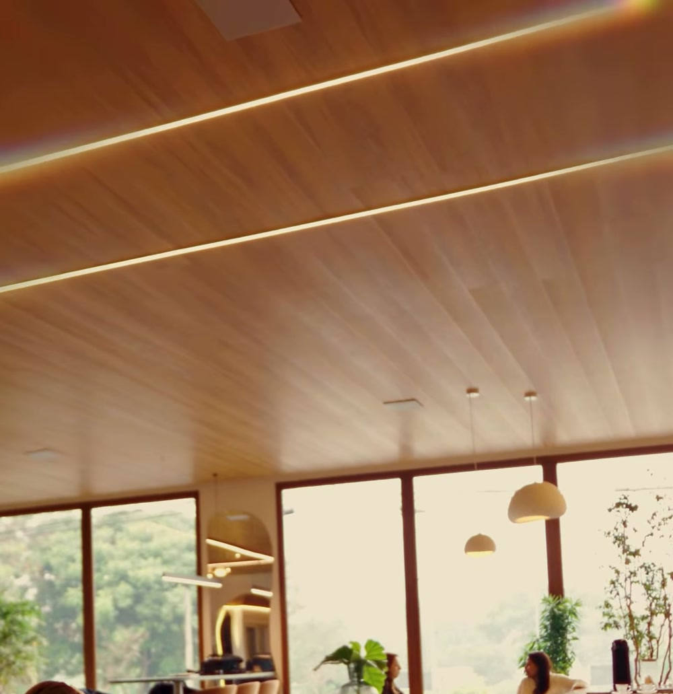
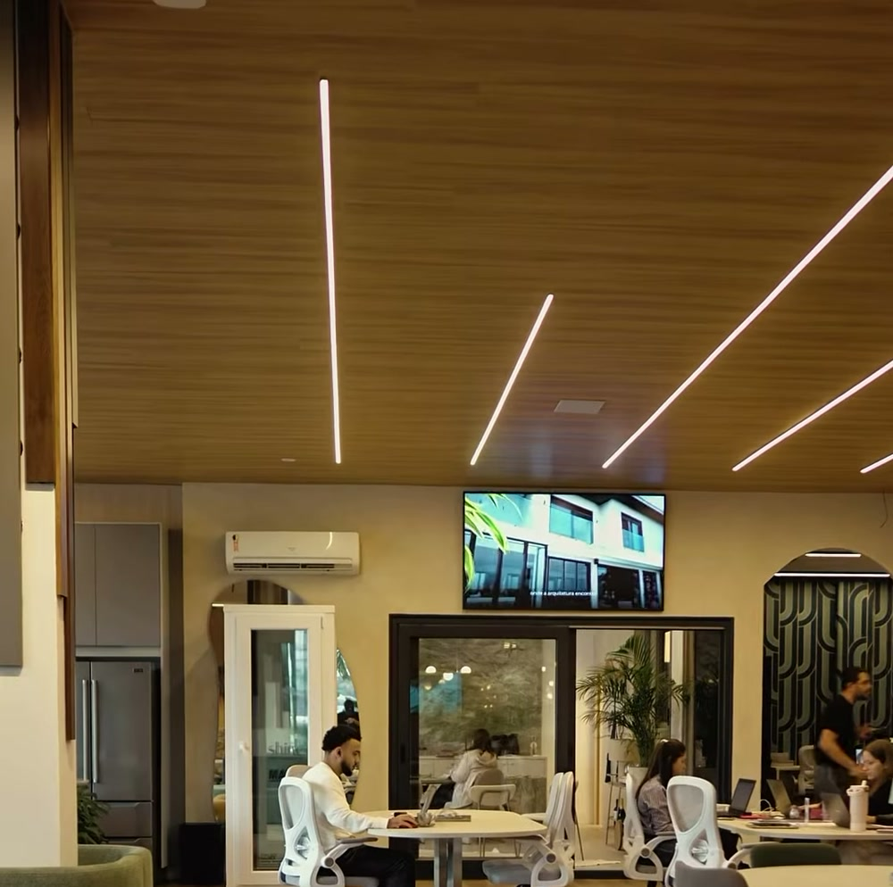
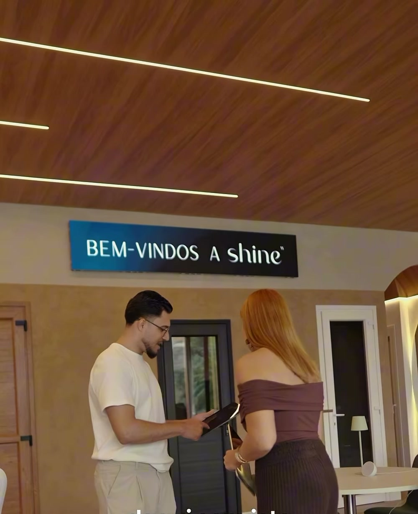

Estou construindo ou reformando.
É a hora de conversar sobre a automação junto com o projeto. Planejar as possibilidades e a infraestrutura ajuda a integrar a tecnologia aos ambientes.
Conversar sobre minha obraDomus Lighting, Indaiatuba
Iluminação, persianas, climatização e áudio integrados. Projetos para casas em obra ou já prontas.

Bom dia, casa.Persianas e iluminação no ritmo da sua manhã.
Abrir as persianas pela manhã. Ajustar a iluminação para jantar. Escolher o som que acompanha o encontro.
A Domus conecta essas possibilidades ao seu projeto, aos ambientes e ao jeito como você vive.
Conheça as soluções que podem fazer parte da sua casa.
Controle a iluminação e componha cenas para diferentes momentos: trabalhar, receber ou relaxar. A escolha das soluções acompanha o uso de cada ambiente.
Integre a abertura e o fechamento das persianas e cortinas à rotina da casa. Luz natural e privacidade podem fazer parte de uma mesma cena.
Leve música aos ambientes e pense a experiência de áudio e vídeo junto com a arquitetura, os espaços e a forma como serão usados.
Inclua o controle do ar-condicionado nas possibilidades da automação. A integração depende dos equipamentos e das necessidades do projeto.
Conheça opções para o acesso à casa e escolha a solução adequada à porta e à rotina de quem mora ali.
Reúna as soluções em um projeto que considere a casa como um todo. Equipamentos, ambientes e cenas são definidos a partir do que você precisa.

Showroom Domus, Indaiatuba
Veja a iluminação, ouça o som e entenda como a automação pode funcionar na sua casa. Traga suas ideias ou seu projeto para uma conversa com a Domus.
É a hora de conversar sobre a automação junto com o projeto. Planejar as possibilidades e a infraestrutura ajuda a integrar a tecnologia aos ambientes.
Conversar sobre minha obraConte o que você quer mudar na rotina. A gente conversa sobre os ambientes e avalia as soluções que podem ser incorporadas à sua casa.
Conversar sobre minha casaPara arquitetos e designers
Conte com a Domus para pensar a automação junto com o seu projeto. Traga seu cliente ao showroom e apresente as soluções funcionando.

Algumas dúvidas sobre começar um projeto de automação.
O projeto pode considerar os ambientes e as soluções que fazem sentido agora. Conte suas prioridades para a gente avaliar as possibilidades e uma eventual expansão.
Existem possibilidades para casas prontas. A escolha depende dos equipamentos, da infraestrutura e do que você quer controlar. A conversa com a Domus ajuda a entender o que é adequado ao seu caso.
Sim. O espaço permite conversar sobre seu projeto com o arquiteto e conhecer as soluções na prática. Combine a visita pelo WhatsApp.
Comece pela sua rotina e pelos ambientes que você usa. No showroom, você pode experimentar as soluções e conversar sobre o que faz sentido para sua casa.
Fale com a Domus pelo WhatsApp e conte se a casa está em obra ou já está pronta. Se tiver um projeto, avise também. A equipe combina com você o próximo passo.
Conte o que você imagina e venha conhecer as possibilidades no showroom.